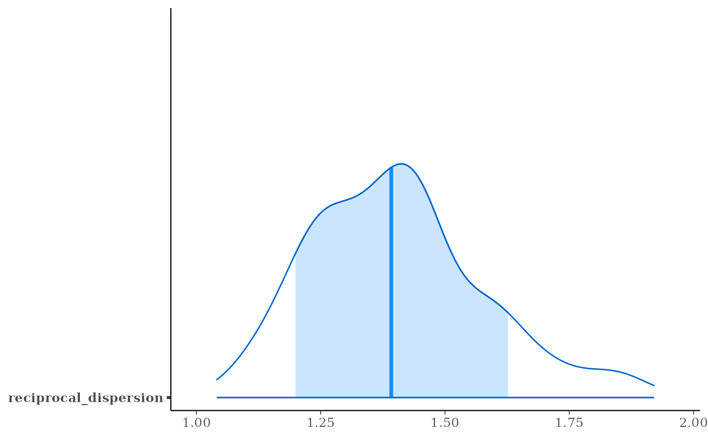

Generalized linear modeling with optional prior distributions for the coefficients, intercept, and auxiliary parameters.
Usage
stan_glm(
formula,
family = gaussian(),
data,
weights,
subset,
na.action = NULL,
offset = NULL,
model = TRUE,
x = FALSE,
y = TRUE,
contrasts = NULL,
...,
prior = default_prior_coef(family),
prior_intercept = default_prior_intercept(family),
prior_aux = exponential(autoscale = TRUE),
prior_PD = FALSE,
algorithm = c("sampling", "optimizing", "meanfield", "fullrank"),
mean_PPD = algorithm != "optimizing" && !prior_PD,
adapt_delta = NULL,
QR = FALSE,
sparse = FALSE
)
stan_glm.nb(
formula,
data,
weights,
subset,
na.action = NULL,
offset = NULL,
model = TRUE,
x = FALSE,
y = TRUE,
contrasts = NULL,
link = "log",
...,
prior = default_prior_coef(family),
prior_intercept = default_prior_intercept(family),
prior_aux = exponential(autoscale = TRUE),
prior_PD = FALSE,
algorithm = c("sampling", "optimizing", "meanfield", "fullrank"),
mean_PPD = algorithm != "optimizing",
adapt_delta = NULL,
QR = FALSE
)
stan_glm.fit(
x,
y,
weights = rep(1, NROW(y)),
offset = rep(0, NROW(y)),
family = gaussian(),
...,
prior = default_prior_coef(family),
prior_intercept = default_prior_intercept(family),
prior_aux = exponential(autoscale = TRUE),
prior_smooth = exponential(autoscale = FALSE),
prior_ops = NULL,
group = list(),
prior_PD = FALSE,
algorithm = c("sampling", "optimizing", "meanfield", "fullrank"),
mean_PPD = algorithm != "optimizing" && !prior_PD,
adapt_delta = NULL,
QR = FALSE,
sparse = FALSE,
importance_resampling = algorithm != "sampling",
keep_every = algorithm != "sampling"
)Arguments
- formula, data, subset
Same as
glm, but we strongly advise against omitting thedataargument. Unlessdatais specified (and is a data frame) many post-estimation functions (includingupdate,loo,kfold) are not guaranteed to work properly.- family
Same as
glm, except negative binomial GLMs are also possible using theneg_binomial_2family object.- na.action, contrasts
Same as
glm, but rarely specified.- model, offset, weights
Same as
glm.- x
In
stan_glm, logical scalar indicating whether to return the design matrix. Instan_glm.fit, usually a design matrix but can also be a list of design matrices with the same number of rows, in which case the first element of the list is interpreted as the primary design matrix and the remaining list elements collectively constitute a basis for a smooth nonlinear function of the predictors indicated by theformulaargument tostan_gamm4.- y
In
stan_glm, logical scalar indicating whether to return the response vector. Instan_glm.fit, a response vector.- ...
Further arguments passed to the function in the rstan package (
sampling,vb, oroptimizing), corresponding to the estimation method named byalgorithm. For example, ifalgorithmis"sampling"it is possible to specifyiter,chains,cores, and other MCMC controls.Another useful argument that can be passed to rstan via
...isrefresh, which specifies how often to print updates when sampling (i.e., show the progress everyrefreshiterations).refresh=0turns off the iteration updates.- prior
The prior distribution for the (non-hierarchical) regression coefficients.
The default priors are described in the vignette Prior Distributions for rstanarm Models. If not using the default,
priorshould be a call to one of the various functions provided by rstanarm for specifying priors. The subset of these functions that can be used for the prior on the coefficients can be grouped into several "families":Family Functions Student t family normal,student_t,cauchyHierarchical shrinkage family hs,hs_plusLaplace family laplace,lassoProduct normal family product_normalSee the priors help page for details on the families and how to specify the arguments for all of the functions in the table above. To omit a prior —i.e., to use a flat (improper) uniform prior—
priorcan be set toNULL, although this is rarely a good idea.Note: Unless
QR=TRUE, ifprioris from the Student t family or Laplace family, and if theautoscaleargument to the function used to specify the prior (e.g.normal) is left at its default and recommended value ofTRUE, then the default or user-specified prior scale(s) may be adjusted internally based on the scales of the predictors. See the priors help page and the Prior Distributions vignette for details on the rescaling and theprior_summaryfunction for a summary of the priors used for a particular model.- prior_intercept
The prior distribution for the intercept (after centering all predictors, see note below).
The default prior is described in the vignette Prior Distributions for rstanarm Models. If not using the default,
prior_interceptcan be a call tonormal,student_torcauchy. See the priors help page for details on these functions. To omit a prior on the intercept —i.e., to use a flat (improper) uniform prior—prior_interceptcan be set toNULL.Note: If using a dense representation of the design matrix —i.e., if the
sparseargument is left at its default value ofFALSE— then the prior distribution for the intercept is set so it applies to the value when all predictors are centered (you don't need to manually center them). This is explained further in [Prior Distributions for rstanarm Models](https://mc-stan.org/rstanarm/articles/priors.html) If you prefer to specify a prior on the intercept without the predictors being auto-centered, then you have to omit the intercept from theformulaand include a column of ones as a predictor, in which case some element ofpriorspecifies the prior on it, rather thanprior_intercept. Regardless of howprior_interceptis specified, the reported estimates of the intercept always correspond to a parameterization without centered predictors (i.e., same as inglm).- prior_aux
The prior distribution for the "auxiliary" parameter (if applicable). The "auxiliary" parameter refers to a different parameter depending on the
family. For Gaussian modelsprior_auxcontrols"sigma", the error standard deviation. For negative binomial modelsprior_auxcontrols"reciprocal_dispersion", which is similar to the"size"parameter ofrnbinom: smaller values of"reciprocal_dispersion"correspond to greater dispersion. For gamma modelsprior_auxsets the prior on to the"shape"parameter (see e.g.,rgamma), and for inverse-Gaussian models it is the so-called"lambda"parameter (which is essentially the reciprocal of a scale parameter). Binomial and Poisson models do not have auxiliary parameters.The default prior is described in the vignette Prior Distributions for rstanarm Models. If not using the default,
prior_auxcan be a call toexponentialto use an exponential distribution, ornormal,student_torcauchy, which results in a half-normal, half-t, or half-Cauchy prior. Seepriorsfor details on these functions. To omit a prior —i.e., to use a flat (improper) uniform prior— setprior_auxtoNULL.- prior_PD
A logical scalar (defaulting to
FALSE) indicating whether to draw from the prior predictive distribution instead of conditioning on the outcome.- algorithm
A string (possibly abbreviated) indicating the estimation approach to use. Can be
"sampling"for MCMC (the default),"optimizing"for optimization,"meanfield"for variational inference with independent normal distributions, or"fullrank"for variational inference with a multivariate normal distribution. Seerstanarm-packagefor more details on the estimation algorithms. NOTE: not all fitting functions support all four algorithms.- mean_PPD
A logical value indicating whether the sample mean of the posterior predictive distribution of the outcome should be calculated in the
generated quantitiesblock. IfTRUEthenmean_PPDis computed and displayed as a diagnostic in the printed output. The default isTRUEexcept ifalgorithm=="optimizing". A useful heuristic is to check ifmean_PPDis plausible when compared tomean(y). If it is plausible then this does not mean that the model is good in general (only that it can reproduce the sample mean), but ifmean_PPDis implausible then there may be something wrong, e.g., severe model misspecification, problems with the data and/or priors, computational issues, etc.- adapt_delta
Only relevant if
algorithm="sampling". See the adapt_delta help page for details.- QR
A logical scalar defaulting to
FALSE, but ifTRUEapplies a scaledqrdecomposition to the design matrix. The transformation does not change the likelihood of the data but is recommended for computational reasons when there are multiple predictors. See the QR-argument documentation page for details on how rstanarm does the transformation and important information about how to interpret the prior distributions of the model parameters when usingQR=TRUE.- sparse
A logical scalar (defaulting to
FALSE) indicating whether to use a sparse representation of the design (X) matrix. IfTRUE, the the design matrix is not centered (since that would destroy the sparsity) and likewise it is not possible to specify bothQR = TRUEandsparse = TRUE. Depending on how many zeros there are in the design matrix, settingsparse = TRUEmay make the code run faster and can consume much less RAM.- link
For
stan_glm.nbonly, the link function to use. Seeneg_binomial_2.- prior_smooth
The prior distribution for the hyperparameters in GAMs, with lower values yielding less flexible smooth functions.
prior_smoothcan be a call toexponentialto use an exponential distribution, ornormal,student_torcauchy, which results in a half-normal, half-t, or half-Cauchy prior. Seepriorsfor details on these functions. To omit a prior —i.e., to use a flat (improper) uniform prior— setprior_smoothtoNULL. The number of hyperparameters depends on the model specification but a scalar prior will be recylced as necessary to the appropriate length.- prior_ops
Deprecated. See rstanarm-deprecated for details.
- group
A list, possibly of length zero (the default), but otherwise having the structure of that produced by
mkReTrmsto indicate the group-specific part of the model. In addition, this list must have elements for theregularization,concentrationshape, andscalecomponents of adecovprior for the covariance matrices among the group-specific coefficients.- importance_resampling
Logical scalar indicating whether to use importance resampling when approximating the posterior distribution with a multivariate normal around the posterior mode, which only applies when
algorithmis"optimizing"but defaults toTRUEin that case- keep_every
Positive integer, which defaults to 1, but can be higher in order to "thin" the importance sampling realizations. Applies only when
importance_resampling=TRUE.
Value
A stanreg object is returned
for stan_glm, stan_glm.nb.
A stanfit object (or a slightly modified
stanfit object) is returned if stan_glm.fit is called directly.
Details
The stan_glm function is similar in syntax to
glm but rather than performing maximum likelihood
estimation of generalized linear models, full Bayesian estimation is
performed (if algorithm is "sampling") via MCMC. The Bayesian
model adds priors (independent by default) on the coefficients of the GLM.
The stan_glm function calls the workhorse stan_glm.fit
function, but it is also possible to call the latter directly.
The stan_glm.nb function, which takes the extra argument
link, is a wrapper for stan_glm with family =
neg_binomial_2(link).
References
Gelman, A. and Hill, J. (2007). Data Analysis Using Regression and Multilevel/Hierarchical Models. Cambridge University Press, Cambridge, UK. (Ch. 3-6)
Muth, C., Oravecz, Z., and Gabry, J. (2018) User-friendly Bayesian regression modeling: A tutorial with rstanarm and shinystan. The Quantitative Methods for Psychology. 14(2), 99–119. https://www.tqmp.org/RegularArticles/vol14-2/p099/p099.pdf
See also
stanreg-methods and
glm.
The various vignettes for stan_glm at
https://mc-stan.org/rstanarm/articles/.
Examples
if (.Platform$OS.type != "windows" || .Platform$r_arch != "i386") {
### Linear regression
mtcars$mpg10 <- mtcars$mpg / 10
fit <- stan_glm(
mpg10 ~ wt + cyl + am,
data = mtcars,
QR = TRUE,
# for speed of example only (default is "sampling")
algorithm = "fullrank",
refresh = 0
)
plot(fit, prob = 0.5)
plot(fit, prob = 0.5, pars = "beta")
plot(fit, "hist", pars = "sigma")
# \donttest{
### Logistic regression
head(wells)
wells$dist100 <- wells$dist / 100
fit2 <- stan_glm(
switch ~ dist100 + arsenic,
data = wells,
family = binomial(link = "logit"),
prior_intercept = normal(0, 10),
QR = TRUE,
refresh = 0,
# for speed of example only
chains = 2, iter = 200
)
print(fit2)
prior_summary(fit2)
# ?bayesplot::mcmc_areas
plot(fit2, plotfun = "areas", prob = 0.9,
pars = c("(Intercept)", "arsenic"))
# ?bayesplot::ppc_error_binned
pp_check(fit2, plotfun = "error_binned")
### Poisson regression (example from help("glm"))
count_data <- data.frame(
counts = c(18,17,15,20,10,20,25,13,12),
outcome = gl(3,1,9),
treatment = gl(3,3)
)
fit3 <- stan_glm(
counts ~ outcome + treatment,
data = count_data,
family = poisson(link="log"),
prior = normal(0, 2),
refresh = 0,
# for speed of example only
chains = 2, iter = 250
)
print(fit3)
bayesplot::color_scheme_set("viridis")
plot(fit3)
plot(fit3, regex_pars = c("outcome", "treatment"))
plot(fit3, plotfun = "combo", regex_pars = "treatment") # ?bayesplot::mcmc_combo
posterior_vs_prior(fit3, regex_pars = c("outcome", "treatment"))
### Gamma regression (example from help("glm"))
clotting <- data.frame(log_u = log(c(5,10,15,20,30,40,60,80,100)),
lot1 = c(118,58,42,35,27,25,21,19,18),
lot2 = c(69,35,26,21,18,16,13,12,12))
fit4 <- stan_glm(
lot1 ~ log_u,
data = clotting,
family = Gamma(link="log"),
iter = 500, # for speed of example only
refresh = 0
)
print(fit4, digits = 2)
fit5 <- update(fit4, formula = lot2 ~ log_u)
# ?bayesplot::ppc_dens_overlay
bayesplot::bayesplot_grid(
pp_check(fit4, seed = 123),
pp_check(fit5, seed = 123),
titles = c("lot1", "lot2")
)
### Negative binomial regression
fit6 <- stan_glm.nb(
Days ~ Sex/(Age + Eth*Lrn),
data = MASS::quine,
link = "log",
prior_aux = exponential(1.5, autoscale=TRUE),
chains = 2, iter = 200, # for speed of example only
refresh = 0
)
prior_summary(fit6)
bayesplot::color_scheme_set("brightblue")
plot(fit6)
pp_check(fit6, plotfun = "hist", nreps = 5) # ?bayesplot::ppc_hist
# 80% interval of estimated reciprocal_dispersion parameter
posterior_interval(fit6, pars = "reciprocal_dispersion", prob = 0.8)
plot(fit6, "areas", pars = "reciprocal_dispersion", prob = 0.8)
# }
}
#> Warning: The largest R-hat is 1.06, indicating chains have not mixed.
#> Running the chains for more iterations may help. See
#> https://mc-stan.org/misc/warnings.html#r-hat
#> Warning: Bulk Effective Samples Size (ESS) is too low, indicating posterior means and medians may be unreliable.
#> Running the chains for more iterations may help. See
#> https://mc-stan.org/misc/warnings.html#bulk-ess
#> Warning: Tail Effective Samples Size (ESS) is too low, indicating posterior variances and tail quantiles may be unreliable.
#> Running the chains for more iterations may help. See
#> https://mc-stan.org/misc/warnings.html#tail-ess
#> stan_glm
#> family: binomial [logit]
#> formula: switch ~ dist100 + arsenic
#> observations: 3020
#> predictors: 3
#> ------
#> Median MAD_SD
#> (Intercept) 0.0 0.1
#> dist100 -0.9 0.1
#> arsenic 0.5 0.0
#>
#> ------
#> * For help interpreting the printed output see ?print.stanreg
#> * For info on the priors used see ?prior_summary.stanreg
#> 'x' not specified in '...'. Using x=1:length(y).
#> Warning: The largest R-hat is 1.07, indicating chains have not mixed.
#> Running the chains for more iterations may help. See
#> https://mc-stan.org/misc/warnings.html#r-hat
#> Warning: Bulk Effective Samples Size (ESS) is too low, indicating posterior means and medians may be unreliable.
#> Running the chains for more iterations may help. See
#> https://mc-stan.org/misc/warnings.html#bulk-ess
#> Warning: Tail Effective Samples Size (ESS) is too low, indicating posterior variances and tail quantiles may be unreliable.
#> Running the chains for more iterations may help. See
#> https://mc-stan.org/misc/warnings.html#tail-ess
#> stan_glm
#> family: poisson [log]
#> formula: counts ~ outcome + treatment
#> observations: 9
#> predictors: 5
#> ------
#> Median MAD_SD
#> (Intercept) 3.0 0.2
#> outcome2 -0.4 0.2
#> outcome3 -0.3 0.2
#> treatment2 0.0 0.2
#> treatment3 0.0 0.2
#>
#> ------
#> * For help interpreting the printed output see ?print.stanreg
#> * For info on the priors used see ?prior_summary.stanreg
#>
#> Drawing from prior...
#> Warning: Bulk Effective Samples Size (ESS) is too low, indicating posterior means and medians may be unreliable.
#> Running the chains for more iterations may help. See
#> https://mc-stan.org/misc/warnings.html#bulk-ess
#> stan_glm
#> family: Gamma [log]
#> formula: lot1 ~ log_u
#> observations: 9
#> predictors: 2
#> ------
#> Median MAD_SD
#> (Intercept) 5.53 0.63
#> log_u -0.61 0.18
#>
#> Auxiliary parameter(s):
#> Median MAD_SD
#> shape 3.93 1.82
#>
#> ------
#> * For help interpreting the printed output see ?print.stanreg
#> * For info on the priors used see ?prior_summary.stanreg
#> Warning: Bulk Effective Samples Size (ESS) is too low, indicating posterior means and medians may be unreliable.
#> Running the chains for more iterations may help. See
#> https://mc-stan.org/misc/warnings.html#bulk-ess
#> Warning: Bulk Effective Samples Size (ESS) is too low, indicating posterior means and medians may be unreliable.
#> Running the chains for more iterations may help. See
#> https://mc-stan.org/misc/warnings.html#bulk-ess
#> Warning: Tail Effective Samples Size (ESS) is too low, indicating posterior variances and tail quantiles may be unreliable.
#> Running the chains for more iterations may help. See
#> https://mc-stan.org/misc/warnings.html#tail-ess
